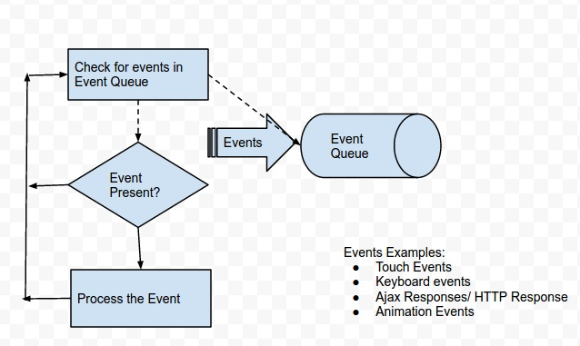

| Serial | Local Storage | Session Storage |
|---|---|---|
| 1 | The storage capacity of local storage is 5MB/10MB | The storage capacity of session storage is 5MB |
| 2 | As it is not session-based, it must be deleted via javascript or manually | It’s session-based and works per window or tab. This means that data is stored only for the duration of a session, i.e., until the browser (or tab) is closed |
| 3 | It is accessible from any window | It is accessible from the same tab |
| 4 | Local storage maintains data across all instances of a site, whether they're in different tabs or windows. | Session storage is unique to each browser tab. |
| 5 | If you want to store site preferences or cache long-term data, local storage is appropriate. | If you wish to store data only while a user interacts with your site, then session storage is ideal. |
| Block Scope | Global Scope |
|---|---|
| Before ES6 (2015), JavaScript had only Global Scope and Function Scope.
ES6 introduced two important new JavaScript keywords: let and const.
These two keywords provide Block Scope in JavaScript.
Variables declared with let/const inside a { } block cannot be accessed from outside the block.
Variables declared with the var keyword can NOT have block scope. Variables declared with var inside a { } block can be accessed from outside the block. |
Variables declared Globally (outside any function) have Global Scope. Global variables can be accessed from anywhere in a JavaScript program. Variables declared with var, let and const are quite similar when declared outside a block. They all have Global Scope. |
The event loop is a process that waits for the Call Stack to be clear before pushing callbacks from the Task Queue to the Call Stack. Once the Stack is clear, the event loop triggers and checks the Task Queue for available callbacks. If there are any, it pushes it to the Call Stack, waits for the Call Stack to be clear again, and repeats the same process.
The above diagram demonstrates the basic workflow between the Event Loop and the Task Queue.